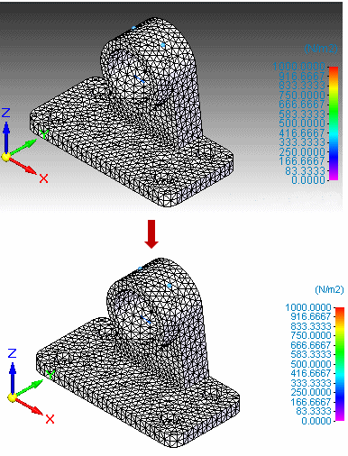

Change the window background color
You can change the background color and remove the gradient shading for better visibility of text and for printing.

-
Do one of the following:
-
In empty space in the graphics window, right-click and choose Background/View Overrides.
-
Choose View tab→Style group→View Overrides .
-
-
In the View Overrides dialog box, click the Background tab.
-
On the Background tab:
-
Click Solid.
-
(Optional) Select a color from the color list.
Tip:View styles are stored in each file. To make each new file you create use your preferred view overrides, edit the view style of the templates you use.
-